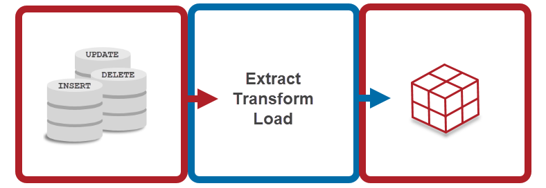

This project involved designing and implementing a normalized OLTP database for Olist, an e-commerce company in Brazil. Additionally, a historical OLAP Data Warehouse was developed to answer key business questions, with insights presented in report sheets. @GitHub

This project leverages the RFM model for customer segmentation using an online retail dataset. Analyzing recency, frequency, and monetary values, it uncovers valuable insights into customer behavior and preferences.
Analyzed Amazon reviews using Python with TextBlob and VADER for sentiment analysis. Explored data, visualized sentiments, and demonstrated the correlation between sentiment distribution and overall scores in an interactive manner.
The focal point was the robust regression modeling, unveiling intricate relationships, particularly showcasing the significant impact of budget on gross earnings. This project exemplifies my advanced skills in data science, emphasizing regression analysis for nuanced insights into movie industry trends.

Utilized Python with Beautiful Soup and Selenium to scrape job listings from Wuzuf.net. Extracted, cleaned, and stored data in CSV, showcasing expertise in web scraping for valuable insights
Utilized Python with Beautiful Soup and Selenium to scrape job listings from https://townteam.com/. Extracted, cleaned, and stored data in CSV, showcasing expertise in web scraping for valuable insights
In this project, I meticulously processed Divvy trips raw data using R, ensuring data accuracy. Employing statistical techniques, I unearthed valuable insights. I then translated complex findings into compelling visuals, showcasing my proficiency in data preparation, analysis, and visualization using R.

Elevating data visualization, I've curated impactful Tableau projects that distill complex datasets into insightful visuals. From interactive dashboards to dynamic charts, each project demonstrates my skill in transforming raw data into accessible, meaningful insights using Tableau.

These projects showcase my expertise in transforming intricate datasets into compelling insights using Power BI. Leveraging DAX expressions, I've crafted dynamic dashboards and reports, demonstrating the power of data visualization in decision-making.

Uncover COVID-19 data insights using SQL queries, from total cases to deaths and vaccinations. I've ranked countries within continents, simplifying complex information to offer a clear picture of the pandemic's impact worldwide.
Cleaned Nashville Housing dataset by standardizing date formats, handling null values, and parsing addresses. Conducted thorough data cleaning, including column splitting and renaming. Resulted in a well-structured dataset for enhanced analysis and insights in real estate analytics.

In this project, we clean the raw data and categorize the buyers by age, genders, and income to conclude trends and insights.